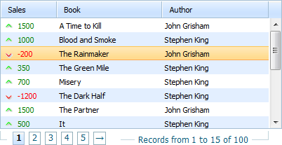
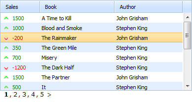
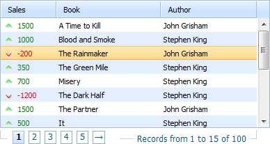
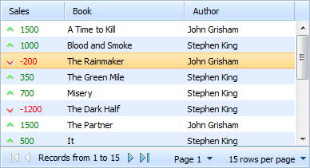
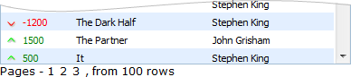

Available only in PRO Edition
The stated functionality requires PRO version of the dhtmlxGrid (or DHTMLX Suite) package and doesn't work with the Smart Rendering mode enabled.
dhtmlxGrid supports paging through the items in the data source.

You enable and configure paging with the enablePaging() method.
mygrid = new dhtmlXGridObject("gridbox");
mygrid.enablePaging(true,15,5,"pagingbox",true,"recInfoArea");
mygrid.init();
The parameters are:
To make the desired page active, call the method changePage():
mygrid.changePage(pageNum);//numbering starts at 1
You can also use the changePageRelative(ind) method to 'open' the desired page. As a parameter the method takes relative shifting (in pages) from the currently active page.
mygrid.changePageRelative(-1);
The library provides 3 skins for paging:
mygrid.enablePaging(true,15,5,"pagingArea",true,"recInfoArea");
mygrid.init();

<script>
...
mygrid.enablePaging(true,15,5,"pagingbox",true);
mygrid.setPagingSkin("bricks");
mygrid.init();
</script>

<script>
...
mygrid.enablePaging(true,15,5,"pagingbox",true);
mygrid.setPagingSkin("toolbar", "dhx_skyblue");
mygrid.init();
</script>

To localize the paging bar into some language, you should use the property i18n.paging.
The set locale is applied to all skins.
...
mygrid.i18n.paging={
results:"Results",
records:"Records from ",
to:" to ",
page:"Page ",
perpage:"rows per page",
first:"To first Page",
previous:"Previous Page",
found:"Found records",
next:"Next Page",
last:"To last Page",
of:" of ",
notfound:"No Records Found"
};
mygrid.enablePaging(true,15,5,"pagingbox",true);
mygrid.setPagingSkin("bricks");
mygrid.init();
The default skin creates 2 information lines:
Both lines can be configured through templates:
mygrid.setPagingTemplates(navigation_template,info_template);
The default definitions of the lines templates are shown below:
//navigation_template
[prevpages:<: ] [currentpages:, ] [nextpages:>: ]
//info_template
Results <b>[from]-[to]</b> of <b>[total]</b>
In templates you can use the following markers:
Any of the markers allows you to specify text for it as: [marker:text_in_normal_state:text_in_disabled_state]
[prevpages:<:No Previous Pages]
You can use any combination of markers and static text/HTML inside the templates:
...
mygrid.enablePaging(true,15,5,"pagingbox",true);
mygrid.init();
mygrid.setPagingTemplates("Pages - [current:0]
[current:+1] [current:+2] , from [total] rows","");

The user can adjust the necessary class in order to change the look and feel of controls:
There are also different styles for different grid skins:
The toolbar skin is based on dhtmlxToolbar. To get the toolbar object you should use the aToolBar property. Note, the property is available only after all rows are loaded.
mygrid.load(url,function(){
var myToolbar=grid.aToolBar;
});
Now you can apply to the myToolbar object any of the dhtmlxToolbar methods.
In addition to that, the users can also configure which buttons (among the default ones) they expect to see in the toolbar:
mygrid.setPagingWTMode(navButtons,navLabel,pageSelect,perPageSelect);
Each of the above mentioned parameters can be set either to true or false:
The user can change the style of the "tooblar" paging skin using the 2nd parameter of the setPagingSkin() method:
mygrid.setPagingSkin("toolbar","dhx_terrace");
If none of the built-in skins meets your needs, you can easily create a custom one. Basically, some custom code can be attached to events of the grid, but paging provides more simple way to define custom skins. Just define a grid method with the name:
mygrid._pgn_[NAME]
And call the following method:
mygrid.setSkin("[NAME]");
As a result, this new grid method will be called each time when some paging information is changed and needs to be updated.
For example, creating a group of paging controls like this:
<input type="button" value="Previous">
<span>Current page: NN</span>
<input type="button" value="Next">
This can be done in the following way:
mygrid._pgn_custom=function(page,start,end){
/* page - the current page
start - the first visible row
last - the last visible row */
var html='<input type="button" value="Previos"><span>Current page: '+page
+'</span><input type="button" value="Next">';
mygrid._pgn_parentObj.innerHTML=html;
mygrid._pgn_parentObj.childNodes[0].onclick=function() { // the previous button logic
mygrid.changePageRelative(-1);
}
mygrid._pgn_parentObj.childNodes[2].onclick=function() { // the next button logic
mygrid.changePageRelative(1);
}
}
mygrid.setPagingSkin("custom");
It's possible to add paging in Status Bar of the container components.
For example, let's assume that you already have an initialized component with a cell.
First, you should attach Status Bar. For this purpose, you have to set the paging param to true:
var pagingId = "pagingArea_"+window.dhx.newId();
cell.attachStatusBar({
text: "<div id='"+pagingId+"'></div>",
paging: true
});
Then you need to enable paging in the grid:
var myGrid = cell.attachGrid();
// more config here if needed
myGrid.enablePaging(true, 9, 3, pagingId);
myGrid.setPagingSkin("toolbar");
You can have a look at the related samples by this link.
Back to top